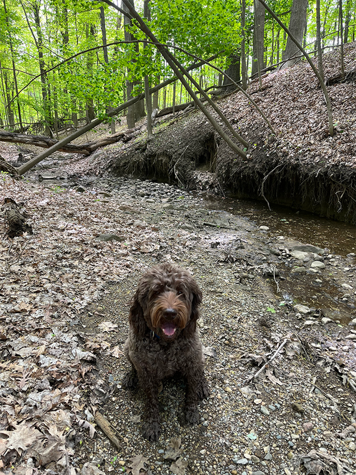
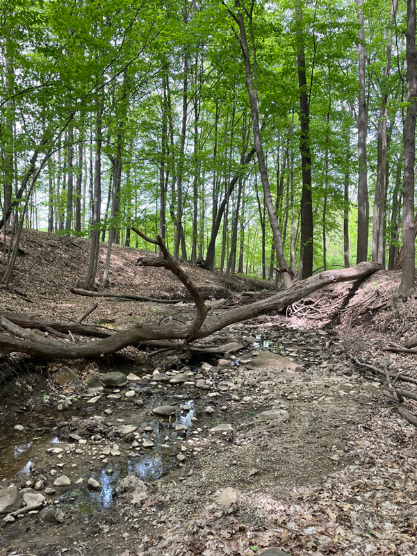

Ann Arbor's parks offer a variety of experiences, from tranquil streams to blooming flowers. These parks are an oasis of peace and beauty, making them perfect for long walks with my dog Bacon. The serenity of the parks, combined with their natural charm, provides an unforgettable experience every time.

